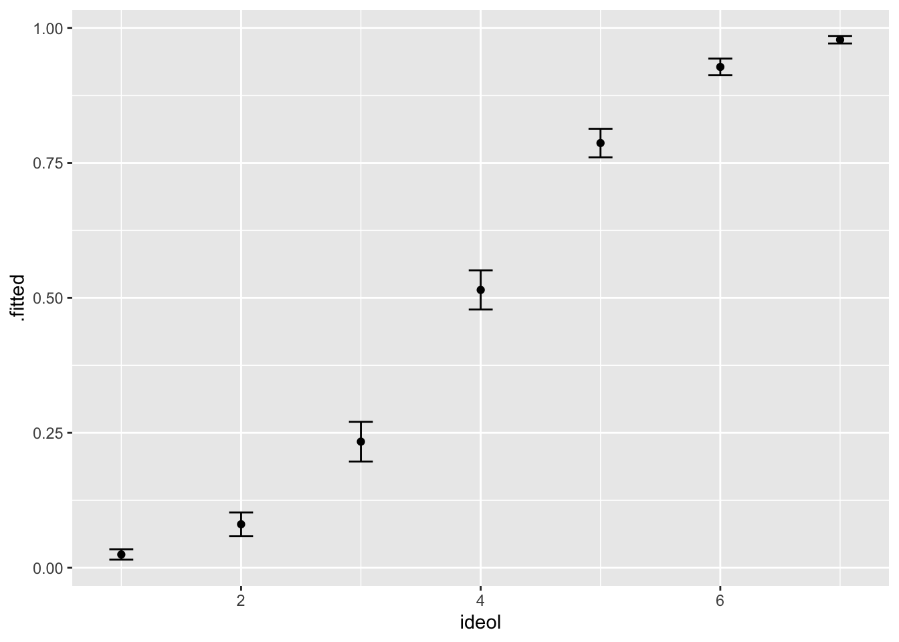
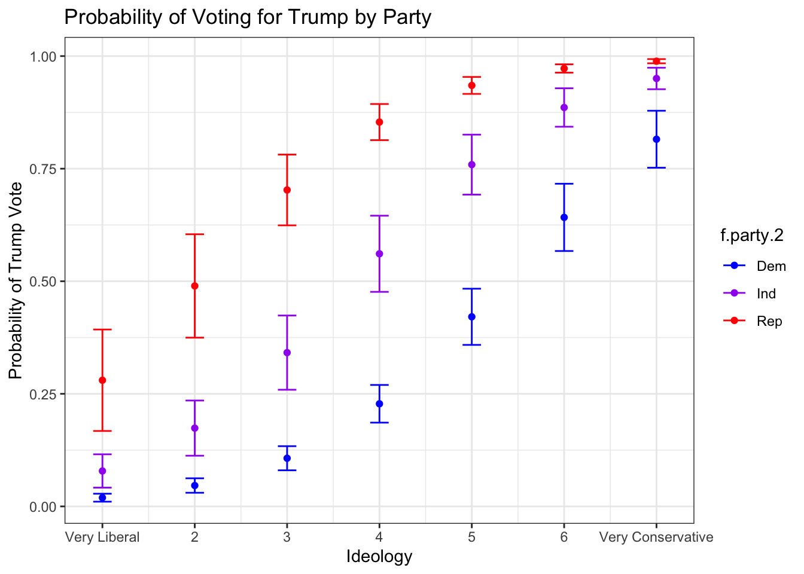
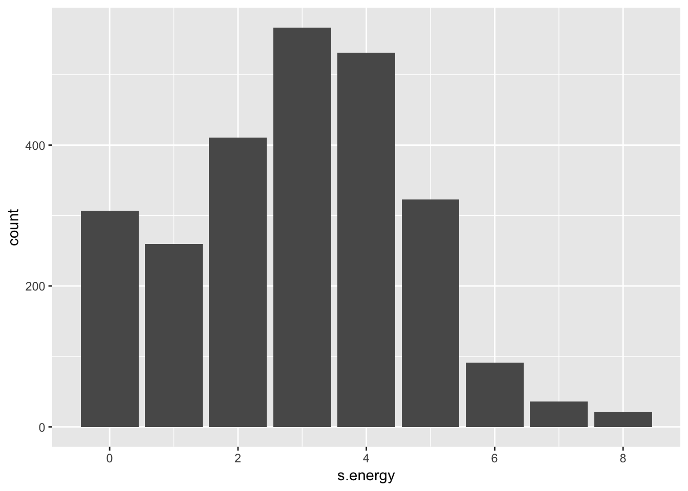
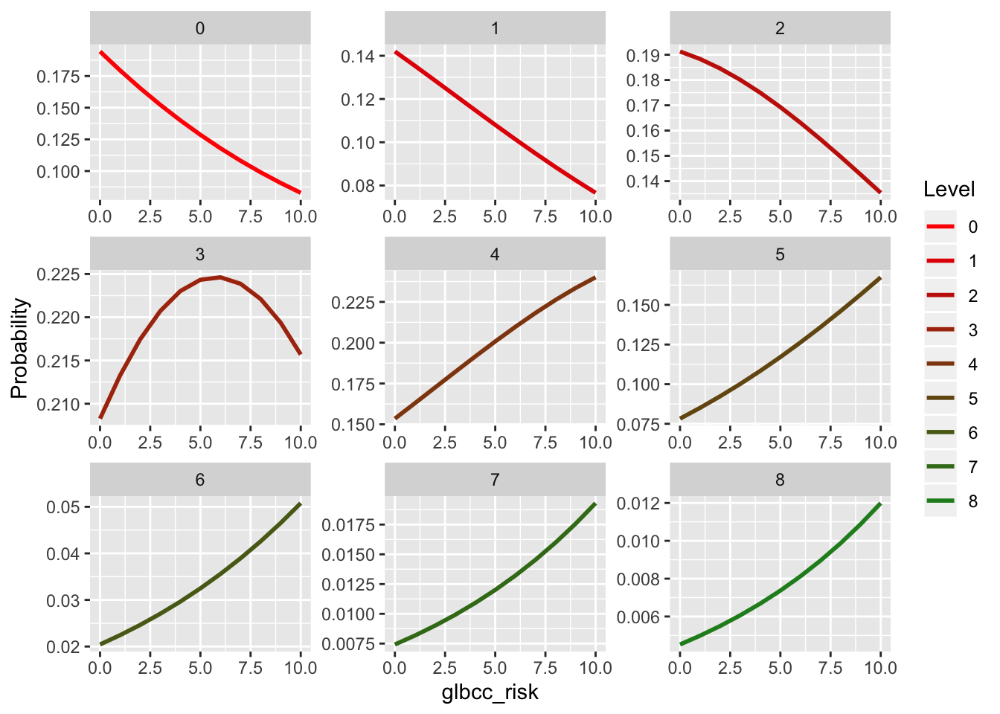

13 Logistic Regression
This lab covers the basics of logistic regression, part of the broader generalized linear model family. GLMs relate a linear model to a response variable that does not have a normal distribution. Often you will use “logit” regression when working with a dependent variable that has limited responses, like a binary DV or an ordered DV. Logit regression uses Maximum Likelihood Estimation, which aims to identify the probability of obtaining the observed data as a function of the model parameters. The following packages are required for this lab:
- tidyverse
- psych
- car
- stargazer
- reshape2
- MASS
- pscl
- broom
- DAMisc
13.1 Logistic Regression with a Binary DV
Recall from lab ten that we attempted to use OLS regression to explore the relationship between a number of independent variables and a vote for Trump. While using OLS provided useful information, some would consider logistic regression more appropriate in that instance. This is because of the binary DV (voted for Trump or did not) that does not follow the normal distribution. Let’s construct a logit regression model that explores how certain IVs predict a vote for Trump. First we need to recode and factor the candidate variable to make it binary and exclude candidates other than Trump and Clinton, where a vote for Trump is 1 and Clinton is 0. We start by factoring the variable:
ds$trump <- car::recode(ds$vote_cand, "0 = 1;1 = 0;else = NA;NA = NA")
ds$f.trump <- factor(ds$trump, levels = c(0, 1), labels = c("Clinton", "Trump"))
table(ds$f.trump)##
## Clinton Trump
## 722 1272Next, select a subset of the data and remove missing observations:
ds.sub <- ds %>%
dplyr::select("f.trump", "gender", "ideol", "income", "education", "race") %>%
na.omit()Build the generalized linear model:
logit1 <- glm(f.trump ~ ideol + gender + education + income, data = ds.sub,
family = binomial(link = logit), x = TRUE)
summary(logit1)##
## Call:
## glm(formula = f.trump ~ ideol + gender + education + income,
## family = binomial(link = logit), data = ds.sub, x = TRUE)
##
## Deviance Residuals:
## Min 1Q Median 3Q Max
## -2.9402 -0.3615 0.2564 0.4587 2.8576
##
## Coefficients:
## Estimate Std. Error z value Pr(>|z|)
## (Intercept) -4.029590067 0.326208525 -12.353 < 0.0000000000000002 ***
## ideol 1.246695960 0.056725872 21.978 < 0.0000000000000002 ***
## gender 0.130433860 0.147900989 0.882 0.378
## education -0.206200640 0.043473125 -4.743 0.0000021 ***
## income 0.000001201 0.000001315 0.913 0.361
## ---
## Signif. codes: 0 '***' 0.001 '**' 0.01 '*' 0.05 '.' 0.1 ' ' 1
##
## (Dispersion parameter for binomial family taken to be 1)
##
## Null deviance: 2381.2 on 1816 degrees of freedom
## Residual deviance: 1288.6 on 1812 degrees of freedom
## AIC: 1298.6
##
## Number of Fisher Scoring iterations: 5The coefficients returned are logged odds, so there really is not much we can get from looking at them alone; however, from looking at the coefficients alone, we can tell that ideology and education both affect the probability of voting for Trump. In order to understand the sense of magnitude, we need to convert these from logged odds to odds, and then to percentages. To convert logged odds to odds, take the exponent of the coefficients using the exp() function:
## (Intercept) ideol gender education income
## 0.01778162 3.47882976 1.13932258 0.81366981 1.00000120Odds are difficult to interpret intuitively, but to get a sense of what they’re telling us, remember that odds greater than 1 indicate increased probability, and odds less than one indicate a decrease in probability. The statistically significant coefficients from the model are ideology and education. Based on the odds of each IV, we can tell that an increase in ideology improves the probability of a Trump vote, and an increase in education reduces the probability of a Trump vote. To get a more intuitive understanding, we can convert these to percentages. To do this you subtract the odds from 1. Do this for the ideology and education variables only, because those are the only siginificant ones:
Ideology:
## ideol
## -2.47883Education:
## education
## 0.1863302This may seem counter-intuitive, but since we subtracted 1 from the odds, a negative percentage is actually an increase in probability. The -2.48 for ideology can be interpreted as a 248% increase in the odds of voting for Trump. The point is that an increasing ideology score (liberal to conservative) drastically increased the probability of a vote for Trump. The .19 for education indicates that an increase in education decreases the odds of voting for Trump by about 19%.
Notice that even at this point, we are still dealing with some level of abstraction (a 248% increase in odds is hard to understand). Perhaps the best reason to use a logit model is that it allows us to generate predicted probabilities of some outcome. Similar to how we used OLS and the predict() function to describe and predict a relationship, logit regression allows us to obtain a predicted probability that a particular outcome occurs, given a certain set of parameters. In our case, we can generate predicted probabilities of voting for Trump. Let’s find the predicted probabilities of voting for Trump as ideology increases and all other IVs are held constant at their means. We first need to generate some simulated data that sequences ideology from 1 to 7 and holds all other values at their means:
ideol.data <- with(ds, data.frame(education = mean(education, na.rm = T),
gender = mean(gender, na.rm = T),
income = mean(income, na.rm = T),
ideol = 1:7))
ideol.data## education gender income ideol
## 1 5.023987 0.4029851 70641.77 1
## 2 5.023987 0.4029851 70641.77 2
## 3 5.023987 0.4029851 70641.77 3
## 4 5.023987 0.4029851 70641.77 4
## 5 5.023987 0.4029851 70641.77 5
## 6 5.023987 0.4029851 70641.77 6
## 7 5.023987 0.4029851 70641.77 7Now use the augment() function to calculate predicted probabilities of voting for Trump at the various ideology levels. To do so, include type.predict = "response". This tells augment() to generate predicted probabilities:
## # A tibble: 7 x 6
## education gender income ideol .fitted .se.fit
## <dbl> <dbl> <dbl> <int> <dbl> <dbl>
## 1 5.02 0.403 70642. 1 -3.68 0.203
## 2 5.02 0.403 70642. 2 -2.43 0.151
## 3 5.02 0.403 70642. 3 -1.19 0.105
## 4 5.02 0.403 70642. 4 0.0586 0.0742
## 5 5.02 0.403 70642. 5 1.31 0.0803
## 6 5.02 0.403 70642. 6 2.55 0.118
## 7 5.02 0.403 70642. 7 3.80 0.166As we would likely expect, increasing ideology increases the probability of voting for Trump. At an ideology level of 7, there is almost a guarantee of voting for Trump. To get a sense of what this would look like, we can visualize these predicted probabilities rather easily. We need to calculate lower and upper bounds of the confidence interval first, which is done just like with other models. Assign the data frame to an object.
logit1 %>%
augment(newdata = ideol.data, type.predict = "response") %>%
mutate(upper = .fitted + 1.96 * .se.fit,
lower = .fitted - 1.96 * .se.fit) -> log.dataVisualizing the predicted probabilities is similar to how we have visualized in the past. Use geom_point() and geom_errorbar():
ggplot(log.data, aes(ideol, .fitted)) +
geom_point(size = 1.5) +
geom_errorbar(aes(ymin = lower, ymax = upper), width = .2)
13.1.1 Goodness of Fit, Logit Regression
Determining model fit when performing logit regression is different than when doing OLS. There are three main methods of exploring model fit, Pseudo-R squared, Log-likelihood, and AIC. The best way to understand logit model fit is by comparison, so let’s create a null model that tries to predict a Trump vote only by the intercept term:
##
## Call:
## glm(formula = f.trump ~ 1, family = binomial(link = logit), data = ds.sub)
##
## Deviance Residuals:
## Min 1Q Median 3Q Max
## -1.4232 -1.4232 0.9501 0.9501 0.9501
##
## Coefficients:
## Estimate Std. Error z value Pr(>|z|)
## (Intercept) 0.56135 0.04878 11.51 <0.0000000000000002 ***
## ---
## Signif. codes: 0 '***' 0.001 '**' 0.01 '*' 0.05 '.' 0.1 ' ' 1
##
## (Dispersion parameter for binomial family taken to be 1)
##
## Null deviance: 2381.2 on 1816 degrees of freedom
## Residual deviance: 2381.2 on 1816 degrees of freedom
## AIC: 2383.2
##
## Number of Fisher Scoring iterations: 4To test model fit via log-likelihood, we can calculate what is called the deviance statistic, or G squared. G squared tests whether the difference in the log-likelihoods of the null model and the demographic model (our initial model) are statistically distinguishable from zero. If so, our demographic model is a better fit. First let’s the log-likelihoods for each model:
To fing G squared, you subtract the null log-likelihood from the demographic log-likelihood:
To test if the G statistic is significant, you use a Chi-Square test with q degrees of freedom, where q is the difference in the number of IVs in the model. Our demographic model has 4 IVs (ideology, age, education, income) and the null model has 1, so q is 3:
## 'log Lik.' 0.000000000000000000000000000000000000000000000000000000000000000000000000000000000000000000000000000000000000000000000445353 (df=5)We can conclude with confidence that the demographic model better explains a vote for Trump than the null model.
A similar approach can be made to compare nested models, similar to a nested F-test. Using the anova() function and specifying chi-squared, we can test if adding or subtracting a particular variable improves model fit. Let’s include race in a new model and compare it to our first model:
logit2 <- glm(f.trump ~ ideol + gender + education + income + race, data = ds.sub,
family = binomial(link = logit), x = TRUE)
summary(logit2)##
## Call:
## glm(formula = f.trump ~ ideol + gender + education + income +
## race, family = binomial(link = logit), data = ds.sub, x = TRUE)
##
## Deviance Residuals:
## Min 1Q Median 3Q Max
## -2.8492 -0.3708 0.2520 0.4528 2.8359
##
## Coefficients:
## Estimate Std. Error z value Pr(>|z|)
## (Intercept) -3.737995285 0.331991444 -11.259 < 0.0000000000000002 ***
## ideol 1.259534233 0.057318244 21.974 < 0.0000000000000002 ***
## gender 0.121195088 0.149323750 0.812 0.417
## education -0.200958175 0.043940078 -4.573 0.0000048 ***
## income 0.000001120 0.000001336 0.838 0.402
## race -0.267085133 0.062456084 -4.276 0.0000190 ***
## ---
## Signif. codes: 0 '***' 0.001 '**' 0.01 '*' 0.05 '.' 0.1 ' ' 1
##
## (Dispersion parameter for binomial family taken to be 1)
##
## Null deviance: 2381.2 on 1816 degrees of freedom
## Residual deviance: 1270.4 on 1811 degrees of freedom
## AIC: 1282.4
##
## Number of Fisher Scoring iterations: 5Now compare models:
## Analysis of Deviance Table
##
## Model 1: f.trump ~ ideol + gender + education + income
## Model 2: f.trump ~ ideol + gender + education + income + race
## Resid. Df Resid. Dev Df Deviance Pr(>Chi)
## 1 1812 1288.7
## 2 1811 1270.3 1 18.296 0.00001891 ***
## ---
## Signif. codes: 0 '***' 0.001 '**' 0.01 '*' 0.05 '.' 0.1 ' ' 1The test indicates that including race improves the model.
Another way to examine model fit is pseudo-R squared. This is not completely analogous to R squared, because we’re not trying to simply explain the variance in Y. However, pseudo-R squared compares the residual deviance of the null model to that of the actual model and ranges of 0 to 1, with higher values indicating better model fit. Deviance in a logit model is similar to the residual sum of squares in an OLS model. To find pseudo-R squared you take 1 minus the deviance of the actual model divided by the deviance of the null model. Let’s use the new model that includes race:
## [1] 0.4665082The final method we go over is AIC, or Akaine Information Criteria. AIC is only useful in comparing two models, and like adjusted R squared it penalizes for increased model parameters. Fortunately, AIC is calculated for us when we look at the summary of the model. A smaller AIC value indicates better model fit. Let’s again compare the two actual logit models (not the null model)
##
## =====================================================
## Dependent variable:
## -----------------------------------
## f.trump
## (1) (2)
## -----------------------------------------------------
## ideol 1.247*** (0.057) 1.260*** (0.057)
## gender 0.130 (0.148) 0.121 (0.149)
## education -0.206*** (0.043) -0.201*** (0.044)
## income 0.00000 (0.00000) 0.00000 (0.00000)
## race -0.267*** (0.062)
## Constant -4.030*** (0.326) -3.738*** (0.332)
## -----------------------------------------------------
## Observations 1,817 1,817
## Log Likelihood -644.325 -635.177
## Akaike Inf. Crit. 1,298.650 1,282.354
## =====================================================
## Note: *p<0.1; **p<0.05; ***p<0.01The AIC values indicate the the model including race is a better fit, which our log-likelihood test also indicated.
13.1.2 Percent Correctly Predicted
Another way to assess how effective our model is at describing and predicting our data is by looking at the percent correctly predicted. Using the hitmiss() function found in the pscl package, we can look at how well the model predicts the outcomes for when y and 0 and when y equals 1, and we can immediately compare it to how well a null model predicts outcomes. Let’s do this for both the logit model that does not include race and the one that does:
## Classification Threshold = 0.5
## y=0 y=1
## yhat=0 498 119
## yhat=1 162 1038
## Percent Correctly Predicted = 84.53%
## Percent Correctly Predicted = 75.45%, for y = 0
## Percent Correctly Predicted = 89.71% for y = 1
## Null Model Correctly Predicts 63.68%## [1] 84.53495 75.45455 89.71478## Classification Threshold = 0.5
## y=0 y=1
## yhat=0 497 99
## yhat=1 163 1058
## Percent Correctly Predicted = 85.58%
## Percent Correctly Predicted = 75.3%, for y = 0
## Percent Correctly Predicted = 91.44% for y = 1
## Null Model Correctly Predicts 63.68%## [1] 85.58063 75.30303 91.44339It appears the model with race better predicts outcomes, which our other diagnostics so far have also suggested. One other method is to examine proportional reduction in error, which looks at how a model reduces error in predictions versus a null model. Let’s look at the PRE for the logit model that includes race. To do so, use the pre() function from the DAMisc package:
## mod1: f.trump ~ ideol + gender + education + income + race
## mod2: f.trump ~ 1
##
## Analytical Results
## PMC = 0.637
## PCP = 0.856
## PRE = 0.603
## ePMC = 0.537
## ePCP = 0.785
## ePRE = 0.535The ? function can help you remember what all of the acronyms mean, but for now, know that PMC is the percent correctly predicted by the null model, PCP is percent correct predicted by the actual model, and PRE is proportional reduction in error. As all of our diagnostics have indicated, the actual model is better at predicting a vote for Trump than the null model.
13.1.3 Logit Regression with Groups
Now let’s go over logit regression with groups. Let’s continue looking into the probability of a vote for Trump, but let’s include political party into the mix. We can use logit regression to find the probability of voting for Trump as ideology varies across political parties. Let’s pull a new subset of the data that removes missing observations and includes the factored party variable:
ds.sub2 <- ds %>% dplyr::select("f.trump", "gender", "ideol", "income",
"education", "race", "f.party.2") %>%
drop_na() #%>%
#mutate(f.part = factor(f.party.2))Notice that we used the factored party variable that only includes Democrats, Independents, and Republicans. Let’s build the model:
logit3 <- glm(f.trump ~ ideol + gender + education + income + race + f.party.2,
family = binomial(link = logit), data = ds.sub2, x = TRUE)
summary(logit3)##
## Call:
## glm(formula = f.trump ~ ideol + gender + education + income +
## race + f.party.2, family = binomial(link = logit), data = ds.sub2,
## x = TRUE)
##
## Deviance Residuals:
## Min 1Q Median 3Q Max
## -3.0531 -0.2845 0.1689 0.3204 2.9330
##
## Coefficients:
## Estimate Std. Error z value Pr(>|z|)
## (Intercept) -3.118886176 0.370541003 -8.417 < 0.0000000000000002 ***
## ideol 0.901913313 0.063659790 14.168 < 0.0000000000000002 ***
## gender 0.094554608 0.173273089 0.546 0.585274
## education -0.272118671 0.050596914 -5.378 0.00000007524784 ***
## income 0.000000066 0.000001596 0.041 0.967020
## race -0.261920110 0.077118302 -3.396 0.000683 ***
## f.party.2Ind 1.465607702 0.214207780 6.842 0.00000000000781 ***
## f.party.2Rep 2.982488437 0.202712936 14.713 < 0.0000000000000002 ***
## ---
## Signif. codes: 0 '***' 0.001 '**' 0.01 '*' 0.05 '.' 0.1 ' ' 1
##
## (Dispersion parameter for binomial family taken to be 1)
##
## Null deviance: 2325.2 on 1769 degrees of freedom
## Residual deviance: 977.9 on 1762 degrees of freedom
## AIC: 993.9
##
## Number of Fisher Scoring iterations: 6With Democrats as the reference group, Independents and Republicans have an increased probability of voting for Trump, which makes sense for Oklahoma voters. Next we generate predicted probabilities. First create data frames for each party:
rep.data <- with(ds.sub2, data.frame(gender = mean(gender),
education = mean(education), race = mean(race),
income = mean(income), ideol = (1:7),
f.party.2 = c("Rep")))
dem.data <- with(ds.sub2, data.frame(gender = mean(gender),
education = mean(education), race = mean(race),
income = mean(income), ideol = (1:7),
f.party.2 = c("Dem")))
ind.data <- with(ds.sub2, data.frame(gender = mean(gender),
education = mean(education), race = mean(race),
income = mean(income), ideol = (1:7),
f.party.2 = c("Ind")))Now we can calculate predicted probabilities of voting for Trump for each party and ideology score, holding all other IVs constant, as well as upper and lower bounds of the confidence intervals:
rep.prob <- augment(logit3, newdata = rep.data, type.predict = "response") %>%
mutate(upper = .fitted + 1.96 * .se.fit,
lower = .fitted - 1.96 * .se.fit)
dem.prob <- augment(logit3, newdata = dem.data, type.predict = "response") %>%
mutate(upper = .fitted + 1.96 * .se.fit,
lower = .fitted - 1.96 * .se.fit)
ind.prob <- augment(logit3, newdata = ind.data, type.predict = "response") %>%
mutate(upper = .fitted + 1.96 * .se.fit,
lower = .fitted - 1.96 * .se.fit)Now we combine everything into one data frame using rbind().
Start by building the visualization. This will be similar to the last visualization, but we plot predicted probabilities for each ideology score in each party, so 21 points in all. We have everything we need to make a great visualization. We plot the points and error bars just like we did last time, but we assign colors by political party, and specify blue for Democrats, purple for Independents, and red for Republicans:
ggplot(df.party, aes(ideol, .fitted, color = f.party.2)) +
geom_point(size = 1.5) +
geom_errorbar(aes(ymin = lower, ymax = upper), width = .2) +
scale_color_manual(values = c("blue", "purple", "red")) +
ggtitle("Probability of Voting for Trump by Party") +
scale_x_continuous(breaks=c(1:7),
labels = c("Very Liberal", "2", "3", "4", "5",
"6", "Very Conservative")) +
xlab("Ideology") +
ylab("Probability of Trump Vote") +
theme_bw()
13.2 Ordered Logit and Creating an Index
Logit regression can be used in more than just situations with a binary DV. Ordered logit analysis is done in a similar way, but with an ordered DV. Instead of simply assessing the probability of one outcome, ordered logit analysis gives us the probability of moving from one level of an ordered categorical variable to the next. We’re going to use ordered logit analysis to also learn how to create an index and work with one as your dependent variable.
The class data set survey includes responses that indicate whether or not the participant does a number of energy-saving activities at their home, like turning the lights off, installing insulation, unplugging appliances, etc. Perhaps you are interested in how a variety of IVs influence one’s propensity to do these activities. You could use binary logit regression to find the probability of individuals doing one of these particular activities. However, you could use ordered logit regression to include all the activities and use an additive index of them as your dependent variable. Start by creating an index of the energy-saving activities:
energy <- with(ds, cbind(enrgy_steps_lghts, enrgy_steps_heat, enrgy_steps_ac,
enrgy_steps_savappl, enrgy_steps_unplug, enrgy_steps_insul,
enrgy_steps_savdoor, enrgy_steps_bulbs))Now take a look at the index:
## vars n mean sd median trimmed mad min max range
## enrgy_steps_lghts 1 2547 0.70 0.46 1 0.75 0 0 1 1
## enrgy_steps_heat 2 2547 0.60 0.49 1 0.62 0 0 1 1
## enrgy_steps_ac 3 2547 0.60 0.49 1 0.62 0 0 1 1
## enrgy_steps_savappl 4 2547 0.12 0.33 0 0.03 0 0 1 1
## enrgy_steps_unplug 5 2547 0.23 0.42 0 0.16 0 0 1 1
## enrgy_steps_insul 6 2547 0.07 0.25 0 0.00 0 0 1 1
## enrgy_steps_savdoor 7 2547 0.07 0.26 0 0.00 0 0 1 1
## enrgy_steps_bulbs 8 2547 0.55 0.50 1 0.56 0 0 1 1
## skew kurtosis se
## enrgy_steps_lghts -0.88 -1.22 0.01
## enrgy_steps_heat -0.40 -1.84 0.01
## enrgy_steps_ac -0.41 -1.83 0.01
## enrgy_steps_savappl 2.32 3.38 0.01
## enrgy_steps_unplug 1.27 -0.38 0.01
## enrgy_steps_insul 3.40 9.54 0.01
## enrgy_steps_savdoor 3.29 8.84 0.01
## enrgy_steps_bulbs -0.18 -1.97 0.01Add these variables together. This will create an index that scores 1 if an individual does one of the activities, 2 if they do two, and so on and so on:
ds$s.energy <- with(ds, enrgy_steps_lghts + enrgy_steps_heat + enrgy_steps_ac +
enrgy_steps_savappl + enrgy_steps_unplug + enrgy_steps_insul +
enrgy_steps_savdoor + enrgy_steps_bulbs)Examine the index:
## vars n mean sd median trimmed mad min max range skew kurtosis
## X1 1 2547 2.94 1.77 3 2.94 1.48 0 8 8 0.08 -0.38
## se
## X1 0.04Make a bar plot of the index:

Start building the model. First select our relevant variables and remove missing observations:
In order to use the energy index as a dependent variable, we treat it as a factor:
There are a number of ways to do ordered logit, but for this example we use the polr() function found in the MASS package.:
Use stargazer() to look at the results:
##
## -------------------------------
## f.energy
## -------------------------------
## ideol 0.049* (0.025)
## age -0.002 (0.002)
## glbcc_risk 0.098*** (0.014)
## N 2,513
## -------------------------------
## *p < .1; **p < .05; ***p < .01The results indicate an increased risk associated with climate change corresponds with an an increase in the odds of doing enery-saving techniques at home. When doing ordered logit, coefficient interpretation is even less intuitive than it is with a binary DV. This makes generating predicted probabilities even more important. We are going to generate predicted probabilities of each level of the DV (0 through 8) as perceived climate change risk increases and the other IVs are held constant at their means. It should make sense that we have to do it this way. We can’t really explain the relationship in any other way with the information we have.
First we create a data frame to work with:
ord.df <- data.frame(ideol = mean(ds.sub3$ideol),
age = mean(ds.sub3$age),
glbcc_risk = seq(0, 10, 1))Now we use the predict() function to generate predicted probabilities of each level of the DV as we sequence climate change risk from 0 to 10. The augment() function does not work with the polr() function, so that is why we are using predict().
## ideol age glbcc_risk 0 1 2 3
## 1 4.656188 60.37724 0 0.19435827 0.14196855 0.1912928 0.2082757
## 2 4.656188 60.37724 1 0.17942987 0.13532435 0.1883238 0.2132792
## 3 4.656188 60.37724 2 0.16541268 0.12853979 0.1845691 0.2174494
## 4 4.656188 60.37724 3 0.15228730 0.12168852 0.1800926 0.2207161
## 5 4.656188 60.37724 4 0.14002866 0.11483803 0.1749682 0.2230233
## 6 4.656188 60.37724 5 0.12860710 0.10804884 0.1692771 0.2243305
## 7 4.656188 60.37724 6 0.11798933 0.10137399 0.1631054 0.2246146
## 8 4.656188 60.37724 7 0.10813937 0.09485887 0.1565416 0.2238706
## 9 4.656188 60.37724 8 0.09901939 0.08854133 0.1496742 0.2221116
## 10 4.656188 60.37724 9 0.09059043 0.08245186 0.1425895 0.2193687
## 11 4.656188 60.37724 10 0.08281302 0.07661412 0.1353698 0.2156896
## 4 5 6 7 8
## 1 0.1534703 0.07825448 0.02043592 0.007422660 0.004521296
## 2 0.1629619 0.08507611 0.02244353 0.008175297 0.004985885
## 3 0.1725244 0.09236696 0.02463709 0.009002686 0.005497949
## 4 0.1820742 0.10013563 0.02703147 0.009911920 0.006062283
## 5 0.1915187 0.10838602 0.02964226 0.010910688 0.006684154
## 6 0.2007578 0.11711639 0.03248565 0.012007320 0.007369344
## 7 0.2096849 0.12631840 0.03557834 0.013210813 0.008124197
## 8 0.2181896 0.13597605 0.03893738 0.014530868 0.008955674
## 9 0.2261594 0.14606476 0.04258003 0.015977912 0.009871402
## 10 0.2334828 0.15655041 0.04652346 0.017563123 0.010879736
## 11 0.2400522 0.16738852 0.05078447 0.019298445 0.011989821The next step is to melt the data. This will allow us to eventually generate a prediction line for each level of the DV:
m.df <- melt(prob.df, id.vars = c("ideol", "age", "glbcc_risk"),
variable.name = "Level", value.name = "Probability")Next we will create the visualization. With an ordered logit model, we can visualize predicted probabilities of observing each separate level of the DV (how many energy saving activities), as perceived climate change risk increases. We use facet_wrap() to create individaul visualizations for each level of the DV, so that the graphic does not get too hard to interpret. We also create a color scale that goes from red to green.
col_scale<-colorRampPalette(c("#FF0000","#228B22"))(9)
ggplot(m.df, aes(x = glbcc_risk, y = Probability, colour = Level)) +
geom_line(size = 1) +
scale_color_manual(values = col_scale) +
facet_wrap( ~ Level, scales = "free")
Taking a quick look at these visualizations, we can see that for doing 0 to 2 energy saving activities at home, increasing climate change risk largely corresponds with decreasing probability. This makes sense. Once we reach 4 energy saving activities, increasing climate change risk largely corresponds with increased probabilities.